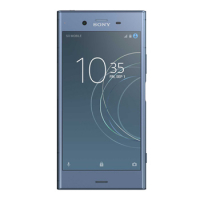
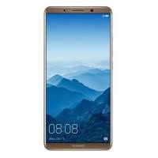

Sony Xperia XZ1 64GB
 Ienirsti fascinējošā, Sony tehnoloģiju bagātinātā izklaides pasaulē! Iemūžini neticamus mirkļus ar jauno 19 megapikseļu Motion Eye fotokameru! Super slow motion režīms uzņem 960 kadrus sekundē, ļaujot ierakstā ieraudzīt to, ko parasti acis nepamana. Predictive Capture funkcija izstrādāta tādēļ, lai neviens negaidīts mirklis nepaslīdētu garām objektīvam – tā automātiski sāk uzņemt attēlus vēl pirms fotografēšanas pogas nospiešanas. Mirkli jātver ne vien ātri, bet arī precīzi, tādēļ XZ1 zibenīgais autofokuss sarūpē asus kadrus, pat darbojoties nepārtrauktas fotografēšanas režīmā.
Huawei Mate 10 Pro Dual SIM 128GB
 Ja pasaulē ir kāds inteliģents viedtālrunis, tad tas ir Huawei Mate 10 Pro. Aprīkots ar Kirin AI jeb mākslīgā intelekta procesoru un īpašu neironu tīkla apstrādes vienību, tas ātri apgūst Tavus paradumus un pielāgojas tiem, nezaudējot darbības ātrumu. Tas gan darbojas zibenīgi, gan nepārtraukti optimizē lietotņu darbību, lai ierīce būtu nevainojamā “formā”. Smart Power Management funkcija gādā, lai 4000 mAh akumulatora enerģija tiktu izlietota maksimāli taupīgi, savukārt jaunā Leica duālā inteliģentā fotokamera perfekti uztver uzņemto objektu līnijas un formu un veic nepieciešamās korekcijas, lai radītu ideālu fotogrāfiju. Ergonomiski izliektais stikla korpuss ērti ieguļas plaukstā, padarot darbošanos plašajā 6 collu FullView ekrānā īpaši patīkamu. Tā izteiksmīgais krāsu attēlojums, 18:9 malu attiecība un HDR10 tehnoloģijas atbalsts ir kā radīti filmu vērošanai.